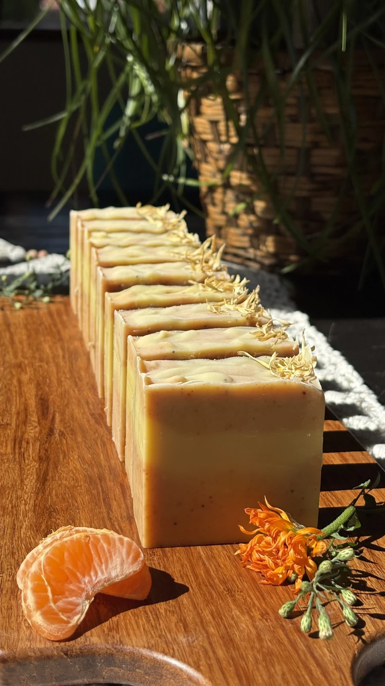

Handcrafted in Gatineau, Québec
Sunshine

Bright, cheerful, and full of warmth, Sunshine is a handcrafted soap inspired by golden mornings and clear summer skies. Its sunny hues and delicate botanical accents bring a sense of joy to your daily routine, turning a
Ingredients
Saponified Oils (Organic Olive Oil, Shea Butter, Organic Coconut Oil, Castor Oil), Organic Coconut Milk, Steam-Distilled Essential Oils (Orange, Litsea), Kaolin Clay, Yellow Clay, Madder Root Powder, Poppy Seeds, Calendula Petals (Garnish Only).
Browse all products